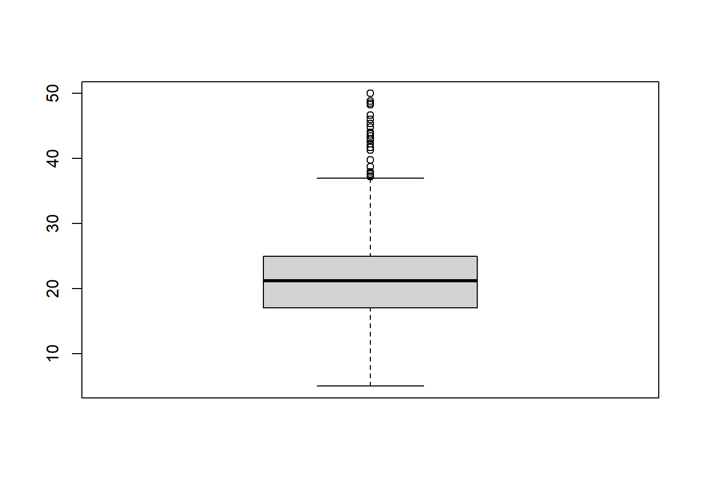

Chapter 3 Ejercicio 3
Para este ejercicio se utiliza el conjunto de datos de valores de la vivienda en suburbios de Boston de nombre Boston, que se puede encontrar en la librería ISLR2. El fichero contiene una serie de variables para 506 suburbios en Boston. Las variables son:
crim : Tasa de criminalidad per cápita.
zn: Proporción de terreno residencial dividido en zonas para lotes de más de 25000 pies cuadrados.
indus: Proporción de acres comerciales no minoristas.
chas: Variable ficticia de Charles River (=1 si el tramo limita con el río; 0 en caso contrario).
nox: Concentración de óxidos de nitrógeno (partes por 10millones).
rm: Número medio de habitaciones por vivienda.
age: Proporción de unidades ocupadas por sus propietarios construidas antes de 1940
dis: Media ponderada de las distancias a cinco centros de empleo de Boston.
rad: Índice de accesibilidad a carreteras radiales.
tax: Tasa de impuesto a la propiedad de valor total por 10000$
ptratio: Proporción alumno-profesor por ciudad.
lstat: Estatus más bajo de la población (porcentaje).
medv: Valor mediano de las viviendas ocupadas por sus propietarios en 1000$
Nuestro objetivo es predecir la variable medv, es decir el precio mediano de la vivienda, con el resto de variables, que actuarán como predictores.
3.1 Apartado a
Cargar la librería ISLR2 en memoria e importar el conjunto de datos Boston. Comprobar que la dimensión del data.frame correspondiente al conjunto de datos es 506×13, es decir, que disponemos de 506 suburbios y 13 variables. Además, ver las primeras filas del conjunto de datos con la función head.
library(ISLR2)## Warning: package 'ISLR2' was built under R version 4.3.1data("Boston")is(Boston)## [1] "data.frame" "list" "oldClass" "vector"dim(Boston)## [1] 506 13head(Boston)## crim zn indus chas nox rm age dis rad tax
## 1 0.00632 18 2.31 0 0.538 6.575 65.2 4.0900 1 296
## 2 0.02731 0 7.07 0 0.469 6.421 78.9 4.9671 2 242
## 3 0.02729 0 7.07 0 0.469 7.185 61.1 4.9671 2 242
## 4 0.03237 0 2.18 0 0.458 6.998 45.8 6.0622 3 222
## 5 0.06905 0 2.18 0 0.458 7.147 54.2 6.0622 3 222
## 6 0.02985 0 2.18 0 0.458 6.430 58.7 6.0622 3 222
## ptratio lstat medv
## 1 15.3 4.98 24.0
## 2 17.8 9.14 21.6
## 3 17.8 4.03 34.7
## 4 18.7 2.94 33.4
## 5 18.7 5.33 36.2
## 6 18.7 5.21 28.73.2 Apartado b
Utilizar la función de summary para producir un resumen numérico de la variable medv. Comentar las principales características de la variable mediante el resumen numérico obtenido. Por ejemplo, comparar la media muestral y la mediana muestral y los tres cuartiles de la variable medv para tener una idea de la forma de la distribución, comparar los valores máximo y mínimo de la variable con dichos cuartiles, etc. Además, obtener un histograma y un diagrama de caja (boxplot) de la variable medv y relacionar ambos gráficos con los comentarios anteriores.
summary(Boston$medv)## Min. 1st Qu. Median Mean 3rd Qu. Max.
## 5.00 17.02 21.20 22.53 25.00 50.00par(mfrow=c(1,2))
hist(Boston$medv)library(ggplot2)
par(mfrow=c(1,1))
histograma <- ggplot(Boston, aes(x = medv)) +
geom_histogram( fill = "blue", color = "red") +
labs(
title = "Histograma de Datos",
x = "Valores",
y = "Frecuencia"
)
histograma## `stat_bin()` using `bins = 30`. Pick better value with
## `binwidth`.
boxplot(Boston$medv)
3.3 Apartado c
Uno de los predictores chas es cualitativo (binario). Transformar el predictor en un factor mediante Boston\(chas <- as.factor(Boston\)chas) para que R entienda que se trata de una variable cualitativa y no una cuantitativa. A continuación, obtener un resumen (summary) de dicho predictor e indicar que información proporciona en base a dicho resumen. Además, obtener un diagrama de caja de medv en función de chas. ¿Qué podemos concluir del gráfico?
Boston$chas <- as.factor(Boston$chas)
summary(Boston$chas)## 0 1
## 471 35color1 = "blue"
color2 = "red"
boxplot = ggplot(Boston,aes(x=chas,y=medv,fill=chas)) +
theme_light(base_size=15) +
geom_boxplot() +
scale_fill_manual(values=c(color1, color2))
boxplot3.4 Apartado d
color_1 = "blue"
ggplot(Boston,aes(x=crim,y=medv)) +
theme_light(base_size=15) +
geom_point(size=2,color=color_1)ggplot(Boston,aes(x=zn,y=medv)) +
theme_light(base_size=15) +
geom_point(size=2,color=color_1)ggplot(Boston,aes(x=indus,y=medv)) +
theme_light(base_size=15) +
geom_point(size=2,color=color_1)ggplot(Boston,aes(x=nox,y=medv)) +
theme_light(base_size=15) +
geom_point(size=2,color=color_1)ggplot(Boston,aes(x=rm,y=medv)) +
theme_light(base_size=15) +
geom_point(size=2,color=color_1)ggplot(Boston,aes(x=age,y=medv)) +
theme_light(base_size=15) +
geom_point(size=2,color=color_1)ggplot(Boston,aes(x=dis,y=medv)) +
theme_light(base_size=15) +
geom_point(size=2,color=color_1)ggplot(Boston,aes(x=rad,y=medv)) +
theme_light(base_size=15) +
geom_point(size=2,color=color_1)ggplot(Boston,aes(x=tax,y=medv)) +
theme_light(base_size=15) +
geom_point(size=2,color=color_1)ggplot(Boston,aes(x=ptratio,y=medv)) +
theme_light(base_size=15) +
geom_point(size=2,color=color_1)ggplot(Boston,aes(x=lstat,y=medv)) +
theme_light(base_size=15) +
geom_point(size=2,color=color_1)